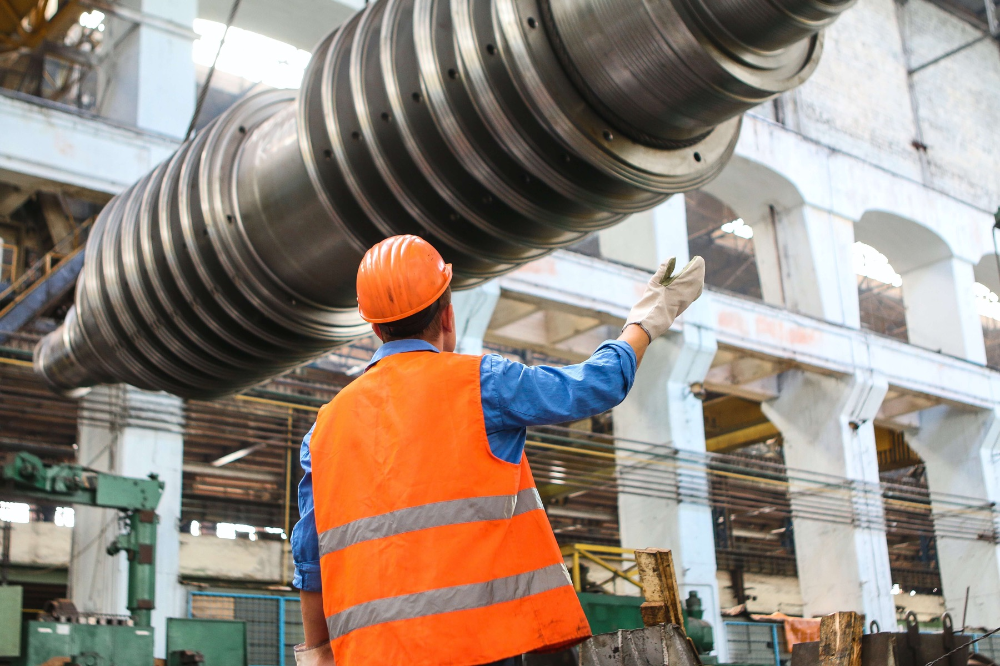

- Home
- Sectoren
Oliefiltratie per sector
Overal waar olie een machine draaiende houdt, houdt Triple R die olie schoon: van spuitgietmachines en persen tot scheepsmotoren, windturbines en testbanken. Kies uw sector voor typische installaties, aanbevolen producten en resultaten bij klanten.

Gemeten vóór en na
ISO 4406vóór → na
21/19/1616/14/11
Yokohama Rubber
Hydraulische persen met varnishproblemen.
Lees de caseISO 4406vóór → na
20/18/1515/13/10
Komatsu
Mobiele hydrauliek en motorolie.
Lees de caseISO 4406vóór → na
19/17/1415/12/9
Castrol
Tandwielolie langdurig proper gehouden.
Lees de caseISO-waarden, sectoren en producten op deze kaarten zijn layoutvoorbeelden en worden vervangen door de gegevens uit de case-PDF’s.
Bespreek uw installatie met een specialist
Beschrijf uw machines in 2 minuten en ontvang vrijblijvend advies over de juiste filteroplossing.

Maxim Van Uytven
Managing Director
Team Triple R Europe, Aartselaar. Portret volgt na de fotoshoot.